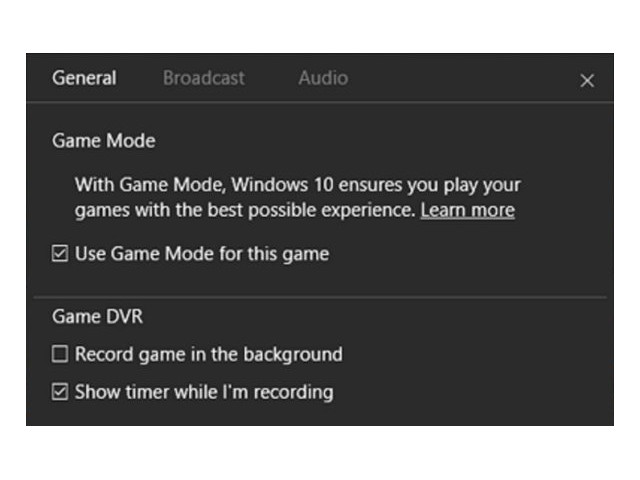
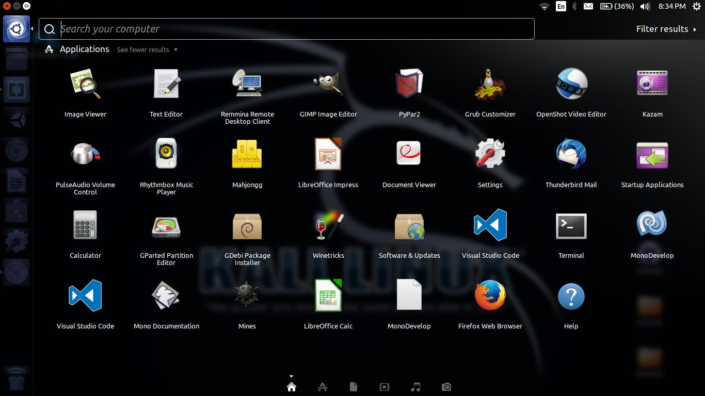

E3 2018!
Posted By: Chris A.
One of the biggest gaming conventions today is called, E3. Usually, it's a cool event with a lot of presenting great games and fun conferences (unlike EA's show). What people look for the most is Sony's and Nintendo's showing at E3. They have mostly been spot on at there events for providing a fun experience at there panel and a great show (especially this year for Nintendo's Smash 5
release).
Sony's E3 will start June 11 at 6PM.
Nintendo's E3 will start June 12 at 9AM
Windows 10 Game Mode
is doing the opposite
Posted By: Chris A.
Microsoft has decided to implement a feature to new Windows 10 Creators Update. It's called Game Mode
. What it does is turning your barebone PC into a powerhouse. This means you could be able to play games that run poorly to great-ish. People loved that Microsoft was finally doing something for budget gamers but when the public got the Creators Update it was a whole different story.
"When you use Game Mode, we make gaming your PC's top priority so you get the best game quality and performance." - Microsoft
Once Windows 10 users got the latest update they noticed something with there FPS—Frames Per Second. It was going down-hill instead of improving Frames. People still have no idea why this happens, but hopefully Microsoft intends on fixing it soon.
Deuces!
Bye Bye Unity, Hello GNOME
Posted By: Chris A.
The update 18.04 LTS is removing Unity and replacing it with GNOME. Seems like a great way of giving the user a new desktop look and layout (not the same old one). I do understand that a small portion of people don't like the change of it, but look at it as a new start. Users that did not like the style of Unity, probably will change to Ubuntu because of its removal.
As an avid user of Ubuntu I personally had no problem with Unity and did kinda like the design. I am happy that Ubuntu did decide to do this switch and I would never actually think they would use it in a million years.
Deuces!
Welcome to the First Post!
Posted By: Chris A.
To start off, thank you for taking the time to start reading this webpage/blog of sorts. Secondly, you might have some questions about what this blog is all about. Well I don't know either—such a great beginning.
I was thinking about maybe making it an open source
blog (meaning anyone could write something), or just a regular old blog about my interests. Until the time comes we have to wait to see what will happen in the end.
Deuces!